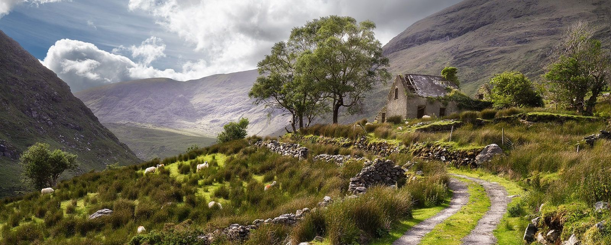

Discover Irish Nature
Roughly around 2.6 million years ago, after the last Ice Age, Ireland
was cut off from the mainland (Europe,) due to the rising sea levels.
This meant that the animals had to adapt to Ireland if they wanted
to survive.
As of today, there are 26 native mammals that roam the island,
one of which is the Irish hare, the national animal of Ireland.
Over 450 different bird species live in Ireland,
and only two of these spieces mirgrate each year.
Each animal has a purpose and keeps the nature cycle going.
Ireland is also home to 4,000+ plants and over 12,000 different insects!
Although we have many different types of animals today,
many species have become extinct, like the Irish Wildcat,
the Grey Wolf, Great Auk, Irish Elk, and the Brown Bear.
Why exactly did these animals go extinct?
The Irish Wildcat didn't necessarily go extinct, but it is critcically
endangered due to the lack of natural habitat. As we evolved, we started to
build roads, houses, towns... which resulted in destroying the Wildcats'
natural habitats to make space for humans.
While the reasons for the extinction of wolves in Ireland varies,
it is likely because in the past, humans used to see wolves as a threat
so they were actively being hunted. Another reason is loss of habitat
(similar to wildcats), and fued with domestic animals.
All the points above played significant roles in their disappearance from
the island.